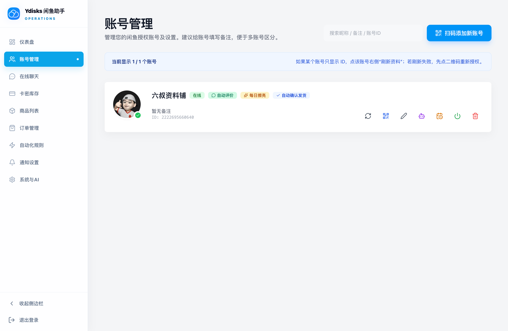

整合闲鱼账号生命周期、即时消息长连接、卡密/图片/文本库存交付、自动化触发规则、可控 AI 客服回复与多渠道告警，全面接管你的闲鱼私域运营。

如果你通过网盘资料、教程包或数字资源做闲鱼推广，推荐搭配 CoverAI 网盘拉新助手 使用：先为不同商品、渠道或推广账号创建独立短链，再查看 PV/UV 趋势与报表，实现投放转化复盘与自动交付一体化。
支持闲鱼 App 二维码扫码登录与密码登录，自动识别 Cookie/Token 时效，后台定时平滑续期与失效停用保护。
按账号隔离在线聊天、历史消息和实时同步，支持闲鱼表情、文本/图片收发，并识别交易卡片与闲小蜜系统消息；普通消息继续支持关键词、默认回复及单次回复控制。
自动关联买家付款事件，支持付款即发货、评价后赠品发放、超时提醒评价，内置幂等检查点防止重复发送。
按账号持续扫描待评价订单并使用统一文案评价；每日擦亮按北京时间执行，每个账号每天最多一次，并支持手动执行与结果记录。
支持固定文本、批量导入卡密库与图片交付三种类型。灵活配置规格、延迟发送、库存追加与预警提醒。
无缝对接 OpenAI、通义千问、Ollama 等兼容接口。支持自定义提示词、控制议价轮次、折扣上限与自动拟人化沟通。
轻松同步闲鱼在售商品，支持 CSV + ZIP 素材包批量发布、关键词获取默认类目、逐行类目优先、自动识别与电子资料最终兜底、单商品手动挂载及自动化发货规则。
集成 Bark、钉钉机器人、飞书、企业微信、Telegram、SMTP 邮件及 Webhook，账号掉线或异常发货秒级推送。
整合 Playwright-Go / Chromium 智能解决闲鱼滑块 CAPTCHA 与指纹校验，保障长时间稳定在线运行。
原生支持 SQLite、MySQL 与 PostgreSQL，嵌入 Goose 自动迁移机制。敏感 Cookie 与 Token 采用 AES-256-GCM 高强度加密。
CoverAI闲鱼助手使用 Go 语言实现核心通讯协议与账号状态机，绝大部分业务逻辑均在轻量级 Go 协程中执行；仅在涉及指纹与滑块风控时调度 Chromium。
# 1. 克隆仓库并复制环境变量模版
git clone https://github.com/suguxiaojie/CoverAI-Xianyu-ERP.git
cd Ydisks-Xianyu-Helper
cp .env.example .env
# 2. 修改 .env 填入数据库密码、管理员密码与主密钥
# POSTGRES_PASSWORD=...
# XIANYU_DATA_KEY=...
# XIANYU_ADMIN_PASSWORD=...
# 3. 启动应用 (会自动拉取 GHCR 镜像并初始化 PostgreSQL 17)
docker compose up -d
# 4. 浏览器访问 http://localhost:59188，使用 admin 账号登录.env 文件中的 XIANYU_ADMIN_PASSWORD，在首次启动时自动创建管理员，默认用户名为 admin。源码运行或桌面端安装后，首次访问管理页面会显示密码设置表单，填写并确认密码即可完成初始化并自动登录。无浏览器或自动化部署场景仍可使用 -init-admin CLI。
XIANYU_DATA_KEY 用于对保存到数据库中的敏感 Cookie、闲鱼账号密码、设备 Token、AI API Key 及通知秘钥进行 AES-256-GCM 强加密。在生产环境部署前必须固定并妥善离线备份。密钥更换会导致原数据库中已加密的数据无法解密。
-no-browser 启动参数运行纯 Go 后端与管理后台，但在没有 Chromium 的情况下，遇风控滑块自动通过能力将不可用。Docker 镜像和 Windows、macOS、Linux 独立安装包都在构建阶段准备了匹配架构的 Chromium 与 Playwright runtime；Linux 安装时只补齐系统依赖，不会从 Debian 仓库重新下载浏览器。
YdisksXianyuHelper Windows Service，并在当前用户登录时启动托盘；macOS 需要按 CPU 选择 arm64 或 amd64 安装包，并注册后台服务和菜单栏控制器；Linux 需要下载匹配架构的压缩包，以 root 执行 ./install.sh 注册 ydisks-xianyu-helper.service。Windows 和 macOS 托盘支持服务控制、过渡状态和打开日志目录，Linux 使用 systemd 管理，没有桌面托盘。
http://127.0.0.1:59188。首次打开管理页面时直接填写并确认管理员密码即可，不需要查找数据库路径或执行 CLI 初始化命令。托盘显示检查中、启动中、运行正常和正在停止等状态；选择退出托盘后，它会先等待后台服务确认停止，再退出自身。日志可从托盘菜单中的“打开日志目录”查看。